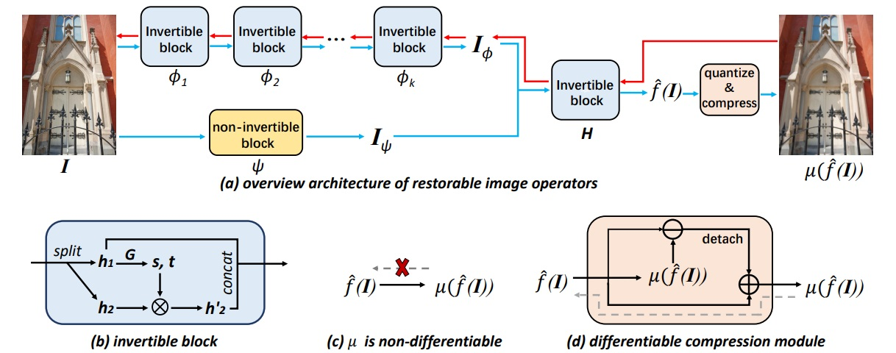

Restorable Image Operators with Quasi-Invertible Networks
AAAI 2022
Abstract
Image operators have been extensively applied to create visually attractive photos for users to share processed images on social media. However, most image operators often smooth out details or generate textures after the processing, which removes the original content and raises challenges for restoring the original image. To resolve this issue, we propose a quasi-invertible model that learns common image processing operators in a restorable fashion: the learned image operators can generate visually pleasing results with the original content embedded. Our model is trained on input-output pairs that represent an image processing operator’s behavior and uses a network that consists of an invertible branch and a non-invertible branch to increase our model’s approximation capability. We evaluate the proposed model on ten image operators, including detail enhancement, abstraction, blur, photographic style, and non-photorealistic style. Extensive experiments show that our approach outperforms relevant baselines in the restoration quality, and the learned restorable operator is fast in inference and robust to compression. Furthermore, we demonstrate that the invertible operator can be easily applied to practical applications such as restorable human face retouching and highlight preserved exposure adjustment.
Architecture
Overview of the proposed quasi-invertible network. In the forward approximation pass (blue arrow), the input image I goes through a two-branch quasi-invertible network and a quantization and compression module. In the reverse restoration pass (red arrow), we can feed the stored output image in the reverse direction for restoring the original image.
BibTeX
@inproceedings{ouyanag22restorable,
title={Restorable Image Operators with Quasi-Invertible Networks},
author={Ouyang, Hao and Wang, Tengfei and Chen, Qifeng},
booktitle={Thirty-Sixth AAAI Conference on Artificial Intelligence (AAAI)},
year={2022}
}